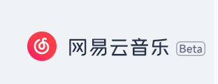
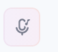
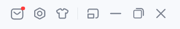

<

当只猫也挺好

为我推荐
云音乐精选
播客
私人漫游
社区
我喜欢的音乐
最近播放
我的播客
我的收藏
下载管理
本地音乐
我的音乐云盘
我创建的歌单
我收藏的歌单
Justin Lo侧田丨全收录歌单
最爱的一位歌手 有关于侧田的一切都会收录到这个歌单，例如卫兰的《她整晚在写信》 命硬的最初版本是《她整晚在写信》，原定卫兰唱，最后给了侧田 所以诞生《命硬》，喜欢的命硬的朋友仔可以听听～不一样的感觉 感谢收藏，歌曲更新中…live版也收录当中
创作者：此用户不开心
播放全部
下载
···
歌曲 评论 收藏者
标题
专辑
喜欢
时长
有形的翅膀
有形的翅膀
3:36
空白格
goodbye&hello
4:12
找自己
I'm ok
5:04